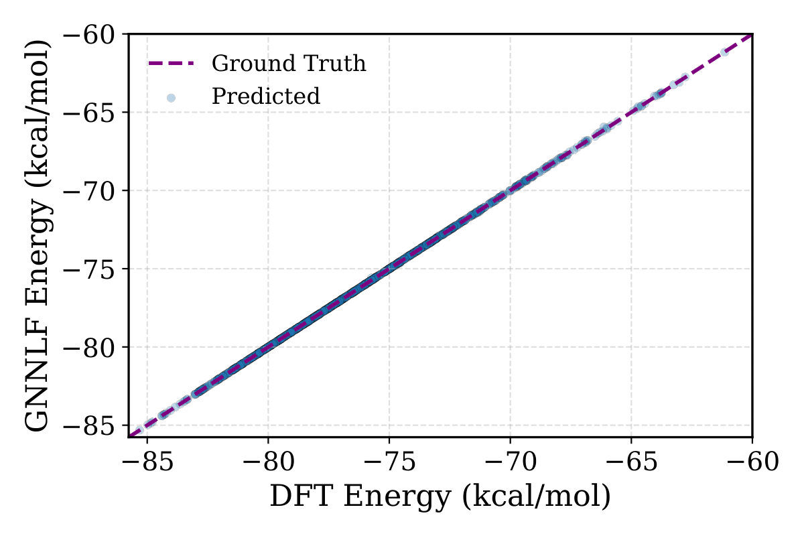
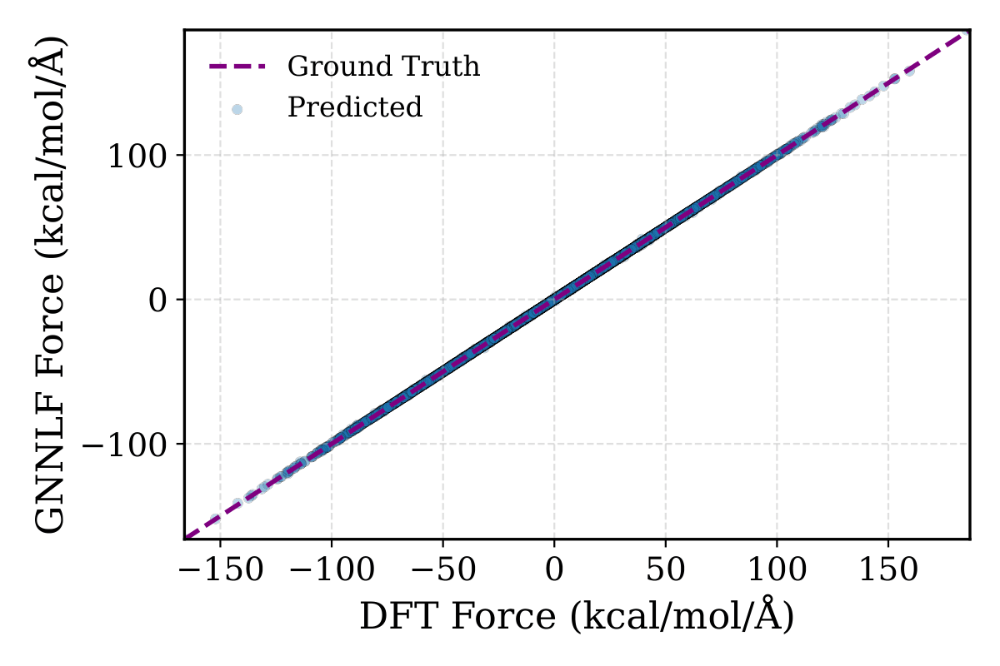
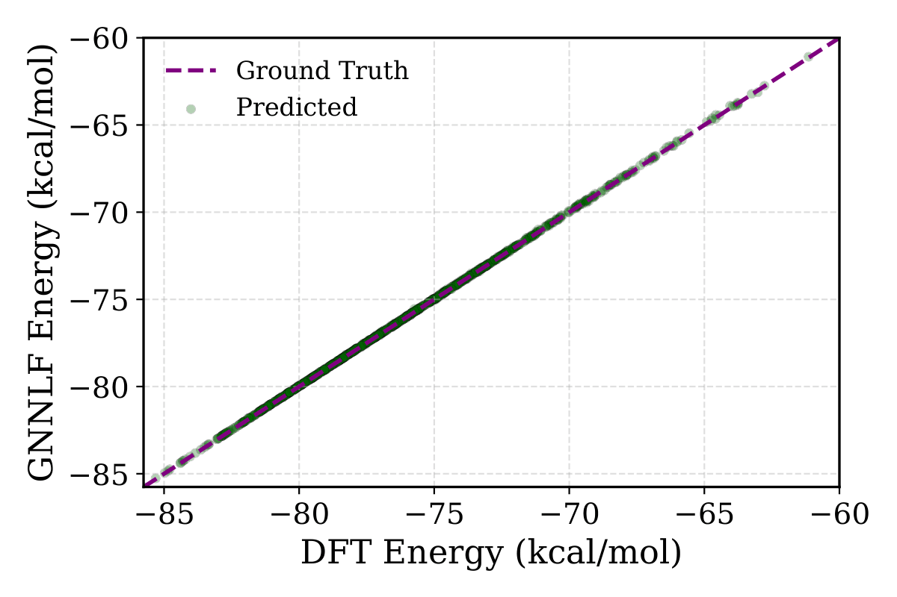
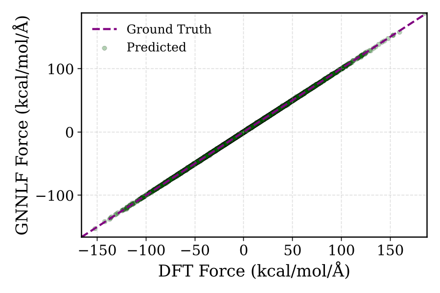

A potential can be perfect on every energy and force you check, and still send a simulation somewhere physically impossible. CRMSE is a cheap post-training fix that teaches the model to distrust the regions it was never shown.
Machine learning interatomic potentials are usually graded the way any regression model is graded: hold out some data, check that predicted energies and forces land close to the reference. By that standard, modern potentials trained on Density Functional Theory data are excellent — chemically accurate, even.
But a potential is rarely used to predict a single energy. It's used to drive a simulation — thousands or millions of steps of molecular dynamics or Monte Carlo sampling — and the quantities scientists actually care about, free energies, structural distributions, conformational populations, are averages over whatever distribution that simulation settles into. Matching energies at a finite set of points says nothing about what happens in the much larger space the model was never trained on. Left unconstrained there, an expressive network is free to invent deep, entirely fictitious low-energy basins, and a long enough simulation will eventually find and fall into one. The paper this site is based on shows that this isn't a rare failure mode: for small, standard benchmark molecules, it's close to guaranteed.
Standard training minimizes a Mean Squared Error between predicted and reference energies. It has no notion of temperature, no notion of a distribution — it only ever sees the points it's given, and stays silent everywhere else.
Contrastive Regularized MSE (CRMSE) adds a second term that does account for the distribution the potential implicitly defines: its own Boltzmann distribution, \( p_\theta(x) \propto e^{-\beta E_\theta(x)} \). The idea, borrowed from energy-based model training, is simple: push the energy of real training configurations down, and push the energy of configurations the model itself likes to wander into back up.
Practically, that means: run the potential, catch the unphysical places it drifts to, and teach it that those places should be high-energy. No new DFT labels are needed — the model is grading its own mistakes.
Train a standard GNN potential to convergence with ordinary energy + force MSE. It's accurate on held-out data — and, as shown below, still an unreliable sampler.
Run MALA / Langevin sampling from this potential and collect the atypical, low-energy configurations it drifts into. These seed a persistent replay buffer.
Continue training with the CRMSE loss: lower the energy of real data, raise the energy of the replay-buffer samples, refreshing the buffer with fresh Langevin steps each epoch.
The corrected potential is dropped back into the same MALA sampler, with the same settings, and re-evaluated against the DFT reference.
Numbers on a table hide what this failure actually looks like. Both clips below show MALA simulations of the same ethanol molecule, from the same starting configuration, under the two potentials.
Tested on ethanol and aspirin from the MD17 benchmark, using a standard GNN-LF architecture with no changes beyond the training objective.
| Model (ethanol) | Energy MAE | Force MAE |
|---|---|---|
| MSE | 0.01 kcal/mol | 0.07 kcal/mol/Å |
| CRMSE | 0.03 kcal/mol | 0.13 kcal/mol/Å |
Both stay well inside chemical accuracy — the correction reshapes the landscape without meaningfully hurting the numbers the model is normally graded on.




The correction holds up when the labeled training set is cut from 950 down to 200 configurations, and is robust across roughly a decade and a half of the regularization strength λ.
The same procedure, unmodified, carries over to aspirin — a more than twice larger molecule with a second, chemically distinct torsional mode.
A model built to be sampled should be trained the way it's used — to reproduce its own distribution, not just to fit a finite set of points.
This isn't specific to chemistry. Any learned regressor that gets deployed as a generator — queried over and over to produce a distribution rather than a single prediction — inherits the same blind spot: pointwise accuracy at training locations says nothing about the shape of the distribution the model induces once it's sampled freely. CRMSE is a minimal, architecture-agnostic way to close that gap for molecular potentials, using no data beyond what the model already had.